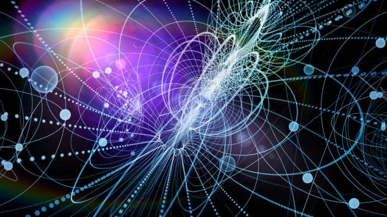
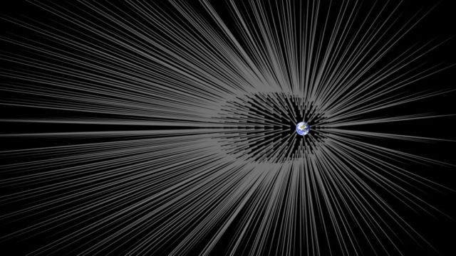

La materia oscura o La materia exótica
Partículas exóticas, La materia oscura, La quinta fuerza.
Indicios de una nueva partícula exótica ha físicos geeking a cabo alrededor de una quinta fuerza misteriosa en el universo Cuando el bosón de Higgs fue descubierto en 2012, el entusiasmo en el mundo de la física era palpable. La noticia apareció en las portadas de los periódicos, e hizo que el físico teórico británico Peter Higgs en una celebridad instantánea. Higgs había predicho que una de Higgs, una partícula fundamental del universo, debe existir para explicar el mundo tal como lo vemos, y después de 50 años de experimentos, su conjetura fue probada correcta.Una vez que se confirmó la teoría de Higgs, los físicos se encontraron frente a un nuevo reto. Si el bosón de Higgs explica una parte de nuestro universo, otro misterio del siglo 20 se mantuvo: algo llamado materia oscura, que constituye el 80% de toda la materia en el universo, pero no pudo ser explicado por la teoría de que el bosón de Higgs había demostrado.
Lo peor es que los físicos no tienen una buena pista sobre dónde incluso comenzar a explicar la existencia de la materia oscura. Desde el descubrimiento de Higgs, los científicos han estado buscando indicios de "nueva física" que podrían ayudar. Una manera de dar un impulso a una nueva física sería encontrar nuevas partículas, y ha habido un montón de rumores acerca de su existencia. Cada vez que hay un candidato, los físicos describen la posibilidad como algo que "sería upend completamente nuestra comprensión del universo" o que sería un "boleto a Estocolmo" para el Premio Nobel. Pero cada vez que se recogen más datos, sus sueños son aplastados.
Ahora un grupo de investigadores en Hungría y los EE.UU. creen que han encontrado una nueva partícula que hace alusión a la presencia de la nueva fuerza en el universo. Lo que están viendo, según ellos, se trata de un seguro de una cosa como puede ser, con sólo una probabilidad de 1 en 200 mil millones de ser un golpe de suerte. Por lo que podrían estar en lo cierto?

La materia oscura o La quinta fuerza
Que se arrastra en la oscuridad
Los físicos describen el mundo a través de algo que se llama el modelo estándar. Si el universo estuviera hecha de ladrillos de Lego, el Modelo Estándar describe cada tipo de ladrillo. Algunos de estos son probablemente bastante familiarizado, como el electrón y el fotón. Todo en el universo es, en su núcleo, formado por estos "ladrillos". El bosón de Higgs fue el último ladrillo prevé que sea en el modelo estándar, por lo que su descubrimiento se reunió con tales grandes celebraciones en el campo.El modelo estándar que explica casi todo
Sin embargo, en el período comprendido entre la predicción y el descubrimiento del bosón de Higgs, los físicos confirmaron que había producido una anomalía en su comprensión del mundo. Las partículas en el modelo estándar, incluso si el Higgs finalmente se encontraron-sólo podía dar cuenta de aproximadamente el 20% de la masa en el universo. Llamaron al 80% restante "materia oscura".No es "oscuro", porque es siniestra, sino porque es invisible. Y cuando los físicos dicen invisible, que significan realmente invisible. Los electrones son invisibles a simple vista, pero no para los físicos, cuyos detectores y ecuaciones complejas de gran alcance puede detectarlos. La materia oscura, sin embargo, es invisible en todas las formas posibles que los físicos pueden hurgar en ella. Ellos saben que existe, porque la materia oscura ejerce una fuerza gravitacional, al igual que cualquier forma de materia, y los físicos son capaces de ver los efectos de la fuerza de la gravedad. descubrimiento
El bosón de Higgs significaba que el próximo gran reto para los físicos de partículas era descubrir finalmente a cabo lo que estaba en el trabajo detrás del velo misterioso de la materia oscura.
Misterio chichón
Su mejor esperanza llegó desde el mismo experimento que se había encontrado el Higgs: el Gran Colisionador de Hadrones (LHC). En el interior del LHC, los científicos acelerar protones a casi la velocidad de la luz y luego se aplastan entre sí, con fines de investigación. Tras el descubrimiento de 2012, el LHC fue cerrado para una actualización. Cuando se reinició en 2015, que era dos veces más potente que antes.
Las explosiones en el LHC recrear las condiciones que existían justo después del Big Bang, que creó el universo. En esas condiciones, todo tipo de partículas exóticas vagaban libremente pero entonces, como el universo se enfrió, se descomponían en partículas estándar. La idea detrás del LHC es atrapar tales partículas exóticas en el acto de descomposición. Cuando son capaces de rastrear correctamente la ruta decaimiento de una nueva partícula, que son capaces de confirmar su descubrimiento.
En diciembre de 2015, los físicos de partículas de todo el mundo eran un hervidero. El LHC anunció un chichón anómalo en los datos que podría significar que habían descubierto una nueva partícula. La partícula, si se confirma, no podría haber sido explicado por la física tal como la conocemos. Podría ser esta la partícula que explica qué es la materia oscura está hecha de? los físicos nunca he conocido a ser tan dispuesto a romper los libros de texto y escribir otros nuevos.
Después de meses de espera de los resultados finales, en agosto el año 2016 El LHC anunció que, por desgracia, la protuberancia misterio no era más que ruido. Así es como avanza la ciencia. Los científicos hacen una hipótesis y luego se ponen a prueba con experimentos para ver si se ajusta a la hipótesis. Cuando los datos no está de acuerdo, se ven obligados a volver a la mesa de dibujo.

materia exótica o quinta fuerza
La Quinta Fuerza?
Ahora un grupo de investigadores en Hungría y los EE.UU. están reclamando que ellos pueden haber encontrado una nueva partícula, sin ninguna necesidad de que el poder del LHC. Y afirman que su descubrimiento, si se confirma, "cambiaría completamente nuestra comprensión del universo, con consecuencias para la unificación de las fuerzas y la materia oscura". También puede haber descubierto una partícula que explica la presencia de un misterioso "quinta fuerza.”Al igual que las partículas fundamentales que componen la materia que podemos ver, tocar y sentir, hay fuerzas fundamentales que permiten a esas partículas de interactuar y crear el mundo que nos rodea. Sabemos de cuatro de estas fuerzas:
- gravedad (que nos mantiene a la Tierra)
- electromagnetismo (que protege a la Tierra de los vientos solares nocivos y carga las baterías de teléfonos inteligentes de forma inalámbrica)
- fuerza nuclear fuerte (que mantiene unidos a los quarks para crear un protón)
- fuerza nuclear débil (lo que explica por qué el uranio finalmente se convierte llevará a través de la radiactividad)
Una vez más, el problema es la materia oscura, ninguna de estas fuerzas explicar la física detrás de las cosas. Una solución propuesta es la existencia del fotón oscuro, que podría interactuar a través de una fuerza oscura. Un equipo de investigadores del Instituto de Investigación Nuclear en Hungría creen que han encontrado a esta photon oscuro.
Para explicar cómo llegaron allí, vamos a hacer un cepillo rápida arriba en la escuela de química. El litio es el tercer elemento de la tabla periódica (después de hidrógeno y helio). Su isótopo más común tiene un núcleo que contiene tres protones y cuatro neutrones, que es por eso que se hace referencia como el litio-7. Cada nuevo elemento tiene un protón más que la anterior en la tabla periódica, por lo que la adición de un protón más al litio-7 lo convertiría al berilio-8 (cuatro protones y cuatro neutrones). Sin embargo, la forma estable de berilio tiene cinco neutrones, no cuatro, lo que significa que el berilio-8 es inherentemente inestable.
Eso es exactamente lo que el equipo investigador húngaro quiso, sin embargo, sabían que la energía extra añadido al núcleo del átomo durante la adición de un protón sería lanzado desde el núcleo de una forma u otra, y que querían ver cómo sucedería. Si el decaimiento fue como se predijo, se habrían trasladado a otros objetivos elementales. Sin embargo, la suerte quiso que, lo hicieron ver algo anómalo.
Trataron de conversión de litio al berilio millones de veces. Cada vez solo se formó un átomo de berilio-8, se emite una partícula que lo haría, después de viajar una distancia corta, la caries en un electrón (partícula con carga negativa) y de positrones (partículas con carga positiva), en un ángulo pequeño, decir lo mismo como la de algo viaja a lo largo de los lados largos de una rebanada de pizza. En casi todos los decaimientos, trabajando hacia atrás desde el patrón de la decadencia y el uso de cálculos complejos, se dieron cuenta de que la partícula que se emite desde un berilio-8 era un fotón.Pero los físicos son más pacientes que la gente común, y una vez en cada millón de berilio-8 decae algo inusual sucedió: el ángulo entre el electrón y el positrón podría ser tanto como 140 grados, que es más de tres porciones de pizza en su conjunto. Trabajando hacia atrás a partir de este patrón de descomposición única, el equipo húngaro argumentó que sólo se pudo observar si la partícula liberado de berilio-8 no era un fotón, después de todo, sino una nueva partícula, tal vez un fotón oscuro.
Otro grupo de investigadores de la Universidad de California, Irvine re-analizado los datos del equipo húngaro. En un nuevo estudio, recién publicado en Physics Review Letters, que trazan su creencia de que puede ser de hecho una nueva partícula, pero no creen que se trata de un fotón oscuro. Teniendo en cuenta la aversión de la nueva partícula de protones, que están llamando el "bosón protophobic" y sus cálculos indican que actúa a través de una fuerza de corto alcance extremadamente que podría ser la quinta fuerza fundamental.

materia exótica, la materia oscura o quinta fuerza
Espera un poco
Los fallos en el LHC para encontrar "nueva física" me hace escéptico de cualquier persona que pretenda que han encontrado una nueva partícula, por no hablar de una nueva fuerza.Existen otras razones para ser escépticos. De acuerdo con una investigación realizada por Quanta Magazine, el grupo húngaro ha hecho demandas de una nueva partícula antes: en 2008, 2012 y 2016. Y en cada nueva publicación que caen en silencio la afirmación anterior. Esto ha hecho que muchos científicos dudosa de trabajo del equipo.
Pero la partícula ha llamado la atención de los físicos de todo el mundo. Ellos están muy contentos de tratar de replicar los experimentos para comprobar la validez de esta nueva quinta fuerza. Incluso el poderoso LHC está listo para asumir el reto. Más repeticiones nos dirá si se trata de un fotón oscuro, un bosón protophobic, o simplemente ruido en los datos. "Sería una locura no hacer otro experimento para comprobar este resultado," Rouven Essig, un físico teórico de la Universidad Stony Brook dijo a Nature News. "La naturaleza nos ha sorprendido antes!”